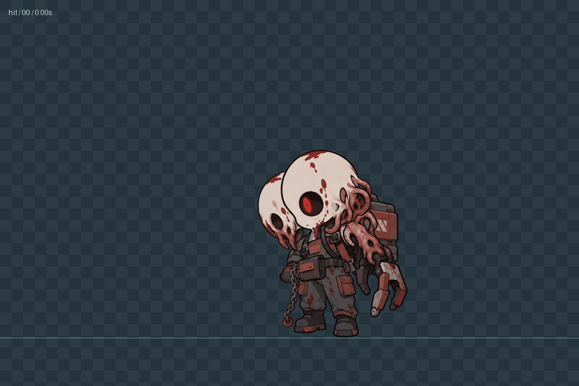
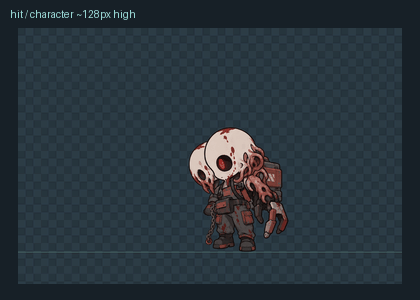

双头呼吸 / stand手机尺寸 / 角色约 128 px 高（循环演示）
卸力倒地 / dead手机尺寸 / 角色约 128 px 高（循环演示）
受击回弹 / hit
手机尺寸 / 角色约 128 px 高（循环演示）
右爪前抓 / attack_1手机尺寸 / 角色约 128 px 高（循环演示）
抬爪斜劈 / attack_2手机尺寸 / 角色约 128 px 高（循环演示）
原地移动 / move手机尺寸 / 角色约 128 px 高（循环演示）